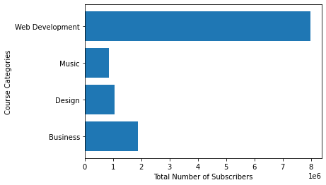
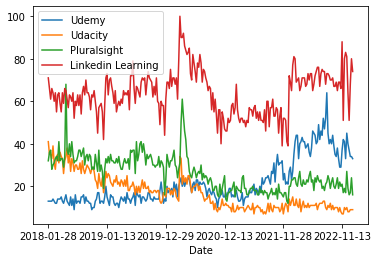
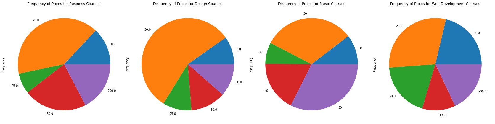

Out of all the types of course selections offered at Udemy--Web Development looks to be the most popular with a large total number of subscribers: over 8 million.

Fig. 1: Matplotlib graph of the number subscribers in each Udemy category.
Compared to their competition Udemy has the least amount of searches from the past 4 years, LinkedIn Learning formerly Lynda ranks the highest.

Fig. 2: Google search trend history of competitors in the education market.
Udemy offers cources in different ranges of prices, but they offer more courses for $20.

The scatter plots of the number of subscribers vs number of reviews.
The horizontal bar graphs of the number of subscribers for each specific course in each category.
Discussion: The code for the static dashboard can be found on github: it is primarily created using HTML and CSS.
The google collab notebook I used to generate the charts and analyze data in Python using Pandas.